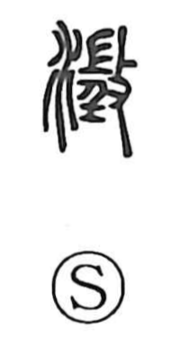

澄

Kun: sumu, sumasu | On: cho
to become clear ・ to clear up ・ to clarify
Explanation
A picto-phonetic character formed with the water element and 登 as the phonetic, which signals the On reading cho. The earliest form is written as 澂, glossed in the Shuowen as “to be clear,” first referring to water settling and becoming limpid. From the image of clarified water, the sense naturally broadened to clarity of mind and the like, yielding the verbal uses sumu (to grow clear) and sumasu (to make clear, to clarify). In Hàn-period epitaphs the form 澄 is consistently used, and this became the standard character.